Sleeping intermittently in the abandoned house, on the whole, it was not bad.
At night, somebody pulled off the road, and came over to pee next to the house.
The sound of him walking woke me up. I sat up in the tent, looked outside, and saw a peeing shadow.
He was even more startled than I was when he saw someone in the empty house.
It was not fun to frighten each other like that. I wanted to get more sleep if possible.
There were several advantages of camping, such as no need to keep my eyes open to write up travel logs,
to take a shower, and to do my laundry.
Also, some money could be saved. That made me feel I had achieved something.
When my alarm went off, the passing cars made the sound of water swooshing.
It had rained again last night. Luckily, it had stopped at dawn.
However, a rain cloud was still lingering in the sky.
It should have been sunrise around 8:00am, however it just looked like it was before daybreak.
The temperature always remained around 20 degrees C before noon, and then it worked its way up.
I felt chilly but cherished the coolness – super comfy for cycling.
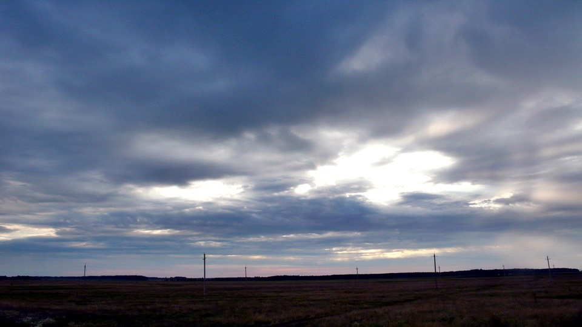
The benefit of turning to M7 instead of staying on M5 showed when I saw a road sign again
showing that Moscow was only 1,300 km away.
This option cut short the route by 300 km in a flash.
A huge gain, although more sections of M7 were winding through mountains.
Hopefully I would still think M7 was the right choice in the end.
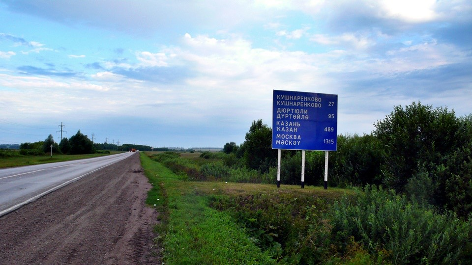
A variety of crops were grown in Russia such as little white flowers which were also grown in the back yards of farmers’ houses.
But I had no idea what they were.
Riding through the ocean of white flowers in the chilly morning, was I heading to the netherworld?
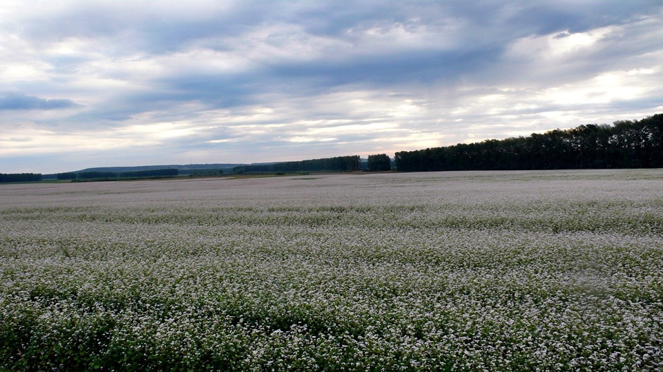
I had been expecting a restaurant since I left the empty house.
As long as I saved money on accommodation, I would reward myself with better food the next day.
Around 10:00am I found a big restaurant, it also had a newsstand.
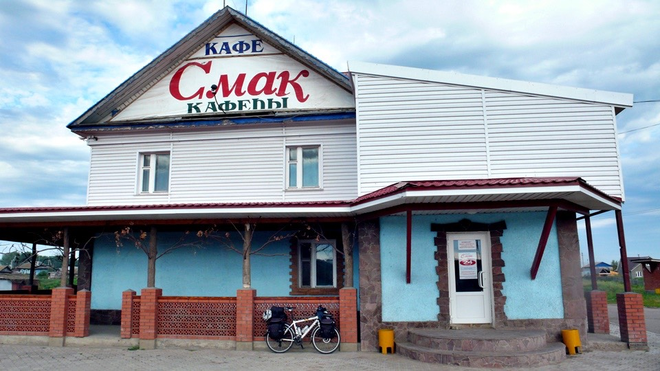
There was a sink right in front of the newsstand.
I did not take a shower yesterday but roughly wiped my face clean with a not-quite damp towel,
so I was very happy to see a faucet.
If nobody was around, I would take a shower just here. Too bad, a lady was sitting right in front of me.
I still felt great to thoroughly wash my face, damping the towel, going outside, and sort of wiping my body.
Was it more of a psychological problem or I was really dirty? I felt itching all over my body.
Why did I say this restaurant was big? It had quite a lot of tables and chairs,
food was served in cafeteria-style and you could see what goodies were available.
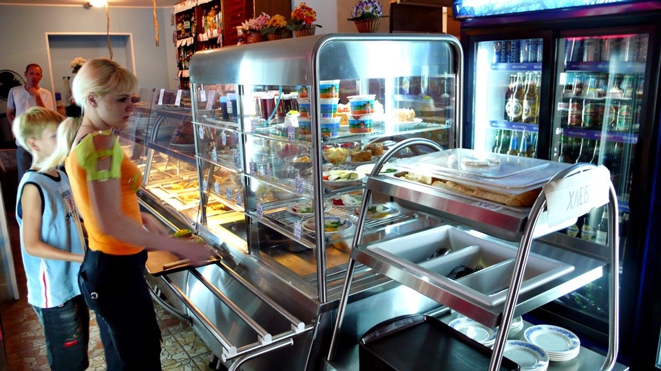
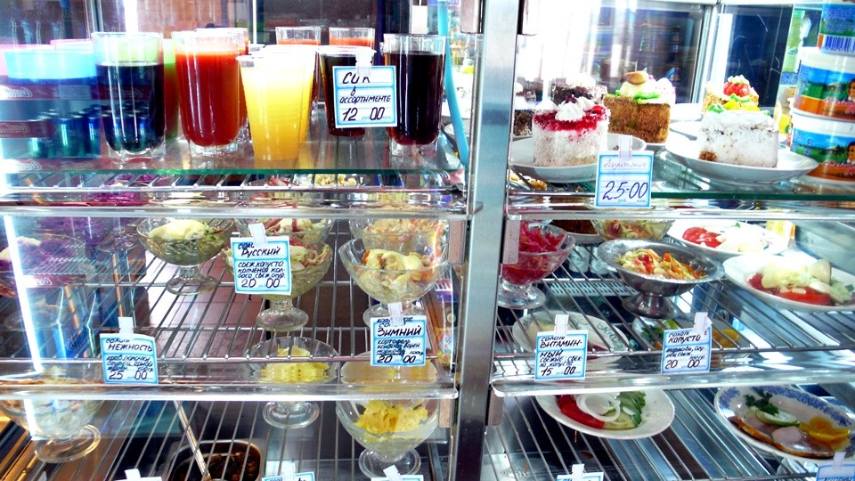
Finally I could order at ease without looking at the menu in Russian and making gestures.
A cup of hot black tea to start with, it came with a box of matches.
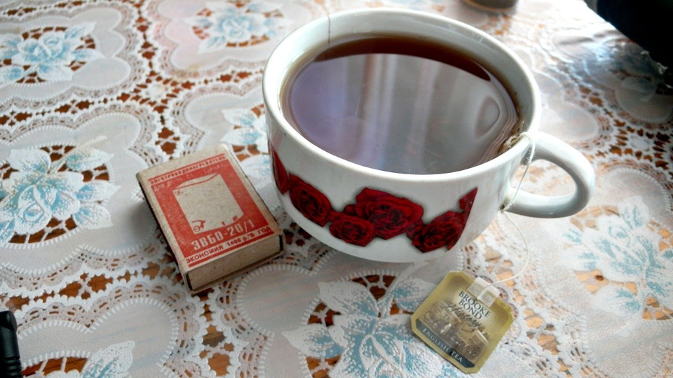
I just mentioned the advantages of camping,
but I still had to find time to write my travel log the next day and bear the consequence of not taking a shower and not doing the laundry.
I sat down at a table spotting Dido parked outside and changed my mood.
Having some tea to pretend to be elegant, I converted myself into a writer.
After finishing up the log I went to order a main meal when it was about noon – a brunch then.
I got a large roasted chicken leg with bread, vegetables,
fruits and chicken noodle soup with many ingredients and meat, and two more boxes of matches came with the meal.
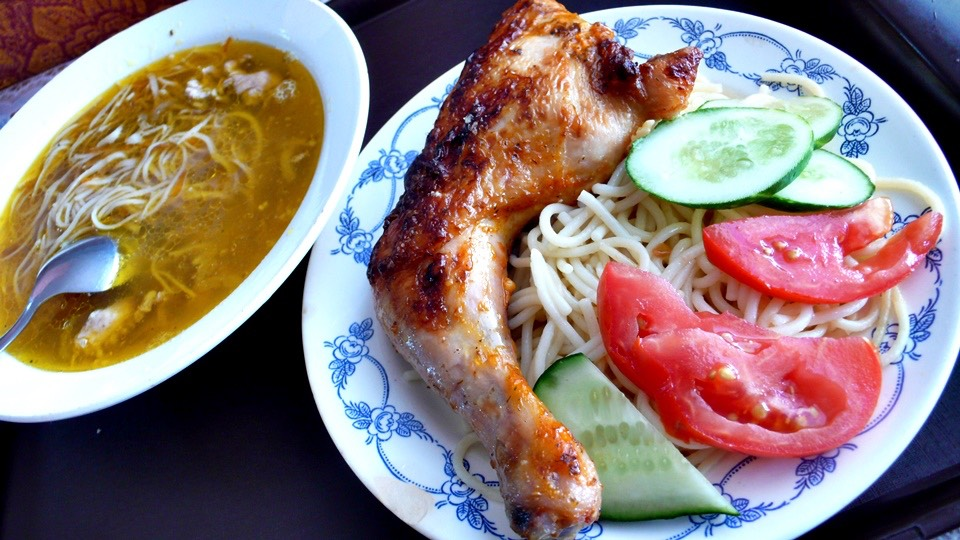
That reminded me that quite a few people asked me for cigarettes along the road, especially workers, farmers and hitchhikers.
Of course, I shook my head saying no cigarettes.
I was thinking of buying a pack to give away a couple of times. I do not smoke, why waste money on cigarettes?
Finishing up the travel log and meal, leaving the restaurant around 1:00pm, I was a bit frightened when I saw the time.
The cool cycling time in the morning had long gone.
The temperature outside had been up to 30 degrees C.
The cloud was not as dense as it was in the morning; the sun had also come out.
I regretted that I had the dry-fit thermal on, and was sweating like a pig.
About one hour after leaving the restaurant, I felt an unusual sway and the rear wheel shifted.
Even it was a very mild, it was there.
I thought it would be ok. However,
after a couple of times when a truck passed by the bike wobbled terribly and I almost fell off Dido,
I went to a bus stop to check out Dido for safety.
The small bus stop was full of weeds with a roof blocking the sun for me.
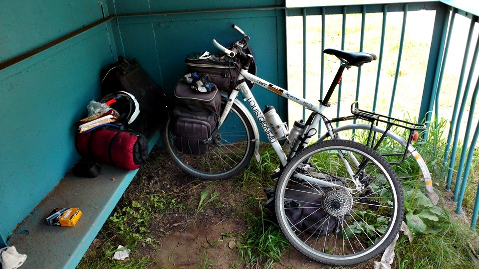
The tires were checked to be inflated before I set off in the morning.
However, I could easily squeeze the rear tire now. Three minutes after pumping up I got a flat tire again.
Obviously, there was a hole in the tire from which air was leaking slowly – I had a flat tire.
It had been quite loooooong since last flat tire happened, about 62 days ago.
Two months without a flat tire, I almost forgot there was such a thing.
The flat tire was caused by small piece of gravel which was not sharp at all.
The reason that the gravel could get in the outer tire was because there was an old hole punctured by barbed wire.
What a coincidence, the chance was one out of ten million for gravel getting into the same old hole to give me a flat.
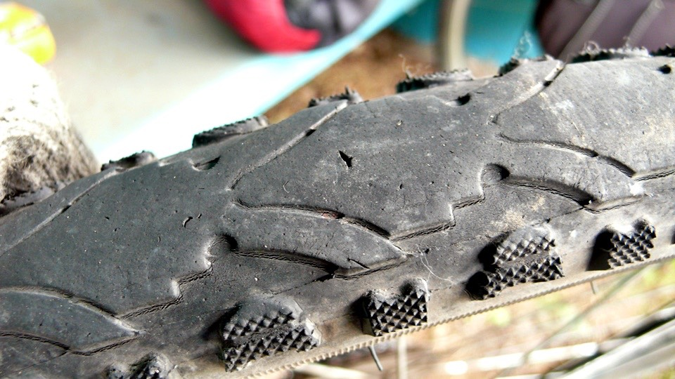
Checking out the outer tires, I saw many small holes and some shallow cracks.
The tires did not seem wearing out terribly.
These outer tires had lasted more than 9,000 km, so they had outperformed their average life time.
Even though there were six bright new outer tires in my bag, I did not plan to change them till I got to Moscow.
Many wheat fields along the road, some were still green and young,
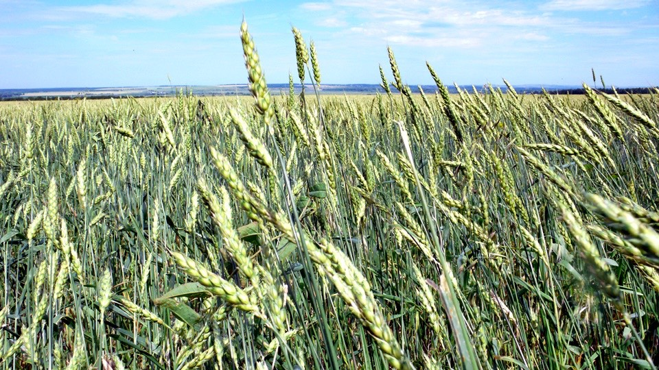
while some had turned golden and were ready for harvest.
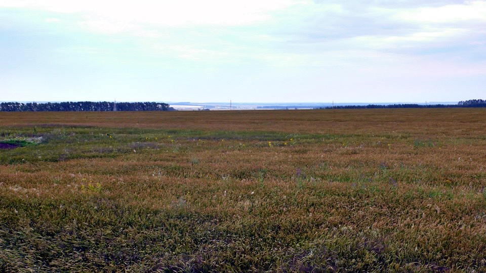
Some strange plants were visible mixed in the wheat fields, such as sunflowers.
Some had been harvested and only loose wheat straw was left in the harvested field.
I was curious what the straw could be used for.
Cap picking up frequency: at least 10 times a day.
When strong wind gusted, or trucks swooshed by, my cap could be blown away.
When turning around to pick up the cap, I had to look out for the vehicles coming behind me.
Sometime it was blown across the road which made the pickup like an adventure. I risked my life in getting it back.
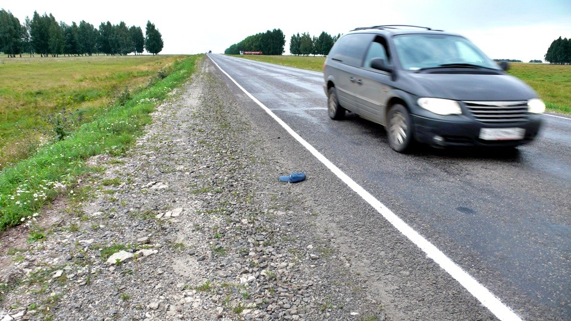
Small-scale oil fields are scattering in this area.
Small oil pumps are easy to see in farm fields or on roadsides.
Here there is no factory or oil pipe yet, my guess is the oil pumps must be invested by farmers,
setting up a few in the fields. If they can get the oil to flow, they probably can quit farming.
At 6:00pm I took a break at a gas station, bought some juice for tomorrow, and planed not to stay in a hotel tonight.
The juice would be cold tomorrow morning.
The Russians I met were all very friendly which was very different than the cold faces that I expected.
They would initiate a conversation and chat with me, which felt good.
There were quite a few small towns along the road where I was always expecting to see shops or restaurants.
The possibility of finding shops in a town was low if it was away from the main road.
The possibility is higher if the town was along the main road. Riding through the town, I saw nothing, just a pure residential area.
Continuing riding for a while, I saw a gas station and a restaurant in the middle of nowhere – strange business model.
The first thing to do in the restaurant was not food or drink.
There was a water bucket outside of the restaurant with cold water flowing out of the faucet.
I saw the remedy to cure my itching body – a shower.
The water bucket was next to the restaurant where many trucks parked and customers were coming in and going out.
I REALY FELT LIKE A SHOWER.
Getting rid of my shyness, removing my bandanas, taking off my shirt and pants,
I was in my boxers taking a sponge bath with a towel, in bright daylight.
I felt awkward at first, when the cold towel that was used to wipe off my body sweat and dirt touched me,
an embarrassment became nothing. It was so comfortable to take a shower.
By the way, I was caught by surprise when squatting down washing my head.
A few days ago, with the rain was going on, I took shelter in a hotel room. I felt dizzy in daytime and thought I had a cold.
When I touched the dry blood on my scalp, I realized that I hit my head while staying in the hotel.
I thought it was ok back then, but it did not seem fine when I saw the blood.
My dizziness was very likely caused by a mild concussion.
I woke up next morning feeling much better. I thought my resistance against a cold was greater,
but now I should correct it as “my resistance against a head injury”
I was a clean man again.
The worries were purely from my imagination because nobody was surprised or disgusted by me taking a shower here.
Getting into the restaurant feeling fresh,
I ordered exactly what was on the empty plates and bowls while looking at the dirty dishes on the table.
What was on the empty plates and bowls were roasted chicken drumstick,
meat sauce pasta, potato carrot and corn soup, bread and milk tea. I was stuffed with the “exact order”.
This restaurant was open 24 hours. I was thinking of staying here overnight, but it seemed too troublesome.
In addition, what was I going to do with Dido?
I finished the travel log at the restaurant for its power.
How about sleeping on the outdoor bench outside of the restaurant?
It did not seem to be a good campsite because it was in an open area – easy to be seen.
If it rained, I would definitely get wet.
The lady owner did not recommend me to sleep there for safety because this restaurant sold alcohol,
many people would come for a drink. She was afraid that drunks might cause trouble.
All in all, camping on the outdoor bench was not a good idea. Walking with Dido,
I looked for a place to spend the night and saw a bed-like iron structure within the fenced-off area of a power station.
The weeds were not too out of control to overwhelm me. What was inevitable was the large amount of insects - very scary.
The iron structure seemed to be a good bed frame, even though it was not long enough for me and I had to bend my knees.
With my inflatable mat laid out on top of the iron structure, it should feel much better. With all that, I did not need to sleep on dirt.
With the fence blocking the view from outside, the safety issue was worked out.
The only problem was no roof and my watch forecasted rain.
If it started raining at night, it would be “fantastic” – so I was praying for tonight to be dry.